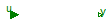

For all models in this package an FMU must be generated
Extends from Modelica.Icons.Package (Icon for standard packages).
| Name | Description |
|---|---|

Extends from Modelica.Blocks.Interfaces.BlockIcon (Basic graphical layout of input/output block).
| Type | Name | Description |
|---|---|---|
| input GearSelectorInput | u | |
| output GearSelectorOutput | y |
Extends from Modelica.Blocks.Interfaces.BlockIcon (Basic graphical layout of input/output block).
| Type | Name | Description |
|---|---|---|
| input GearSelectorInput | u | |
| output GearSelectorOutput | y |